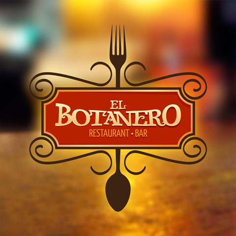
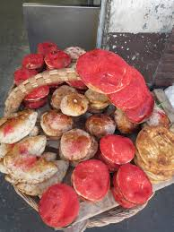
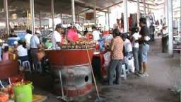

RESTAURANTES O BARES
Principal
Restaurantes
Aqui en Izucar hay Muchas Opciones para comer. Puede ir desde el restaurant del hotel Atlanta u otros, alguna fonda de las cuales hay muchas,
ir al mercado o incluso comprar en un carrito ambulante.
Bares
Al igual que en los restaurantes, puede ir a al restaurant bar tio Beto, al cocoloco, o a alguna cantina del algun barrio, o comprar una cerveza en cualquier tiendita.


